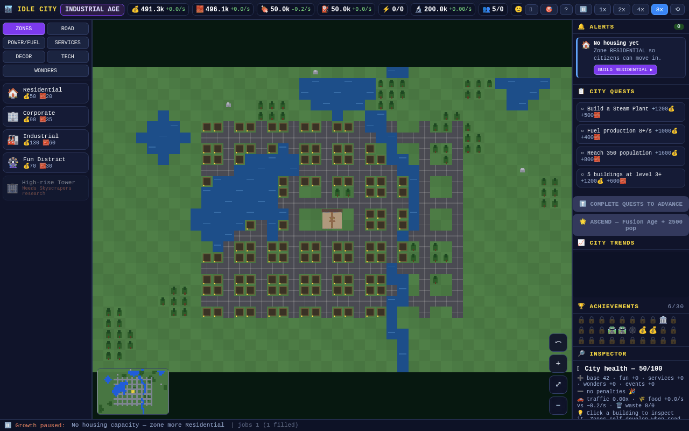
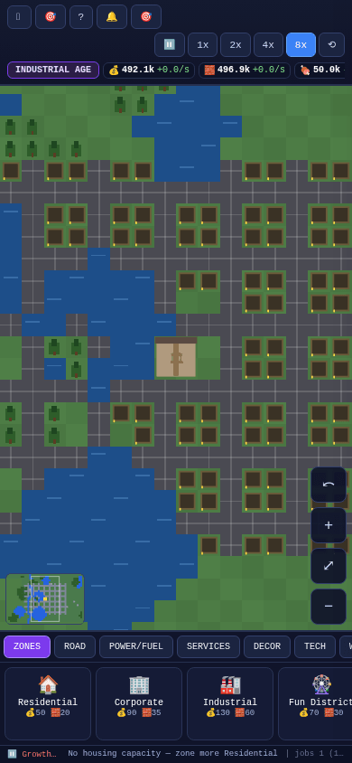
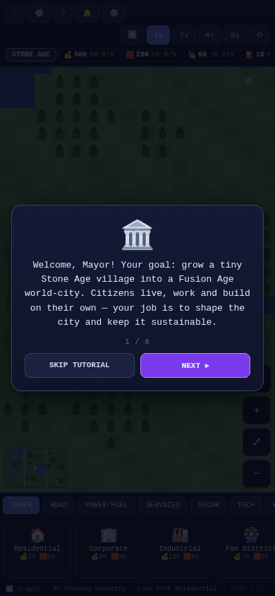
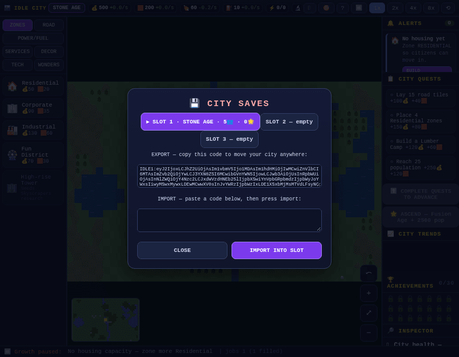

8 Ages of progress
Stone → Bronze → Iron → Medieval → Industrial → Modern → Digital → Fusion. Each age unlocks buildings, power, fuel and a bigger growth multiplier.
A single-file idle city-builder that grows from a Stone Age village into a Fusion Age world-city — you shape the city, it runs itself.
Free & fully offline — nothing to install. The Android .apk is sideload-only (allow installs from unknown sources).

No frameworks, no libraries, no build step, no network. The whole game is one HTML page that renders a living city on a single canvas.
Stone → Bronze → Iron → Medieval → Industrial → Modern → Digital → Fusion. Each age unlocks buildings, power, fuel and a bigger growth multiplier.
Lay roads, zone Residential / Corporate / Industrial / Fun districts, and place utilities, services, decor and world wonders on a procedural 44×28 map.
Zones self-construct, fill with citizens and level up on their own. Agents drive along your road network, with a day/night cycle and weather.
Money, Materials, Food, Fuel, Power, Research and Happiness — all connected. Growth pauses the moment something runs short, and the status bar tells you exactly what.
36 quests gate the ages, 10 research techs reshape the economy, and 3 timed challenges award medals for the fastest cities.
Festivals, trade booms, migration waves, fires and earthquakes keep a run unpredictable — and citizens file petitions you can accept or refuse.
3 save slots, an autosave every ~10 seconds, and a shareable export/import code to move a city between devices — all kept in your browser.
Reach the Fusion Age with 2,500+ citizens to Ascend — carrying a permanent Legacy bonus of +25% income into your next city.
A purpose-built mobile layout with touch pan and pinch-zoom down to 320 px wide — and not a single runtime library to load.
The city runs itself while you watch, plan and expand. Your job is to keep it sustainable — because if happiness ever hits zero, the run is over.
Paint roads outward from the Town Hall. Buildings only work when a road connects them back to it.
Residential houses citizens, Corporate gives jobs and income, Industrial makes materials, Fun raises happiness.
It always names what is blocking growth — no housing, no power, no fuel, unhappy citizens and more.
Complete the age's quests, press Advance Age, and unlock the next era — then Ascend at the Fusion Age.
The same build you can play in your browser right now — nothing to install, nothing to sign up for.



The full game, served from this repository's GitHub Pages — desktop or mobile, online or off.
There is no install step, no server and no internet connection required to play.
idle-city.min.html (minified) and double-click it.index.html is the same game, un-minified.# clone the repository git clone https://github.com/drsamonline/idle-city-ages-of-growth.git cd idle-city-ages-of-growth # just open src/index.html, or serve it: python3 -m http.server 8000 # rebuild the single-file bundles (dev only) npm install node build/build.js
Play needs nothing but a browser. Rebuilding the bundles needs Node.js 18+.
No. Download idle-city.min.html (or index.html) and double-click it, or open the live demo. It runs in any modern browser, fully offline, with no installation, no server and no internet connection.
Almost always roads. A building only functions when a road connects it back to the Town Hall. Read the status bar at the bottom — it names the exact blocker (no housing capacity, no power, fuel shortage, unemployed citizens).
Happiness reached zero — that's the game-over condition. Happiness falls with pollution, unemployment, power and fuel shortages, waste and bad weather, and rises with jobs, Fun districts, services and decor.
Complete all the quests for your current Age, then press Advance Age in the side panel. The button only lights up when the set is finished.
Once you reach the Fusion Age with 2,500+ citizens, Ascend to start a brand-new city while keeping a permanent Legacy bonus of +25% income per ascension.
Yes — mobile is a first-class target. The layout adapts down to 320 px wide, the top bar wraps so the speed controls stay reachable, and you can drag to pan and pinch to zoom. Add it to your home screen for a full-screen, app-like experience.
Yes. There are 3 save slots plus an autosave every ~10 seconds. Saves live in your browser's own localStorage — nothing is sent anywhere. Use the Export code to back up a city or move it to another device.
Yes. No frameworks, no libraries at runtime, no external images, fonts or data, no analytics and no network calls. The dev tools (terser and html-minifier-terser) are only used to build the minified file and are never shipped.
It is released under the PolyForm Noncommercial License 1.0.0 — free for personal, hobby, study, teaching, research and other non-commercial use. Attribution is mandatory: credit Dr. Sohil Momin and link the original repository. Commercial use requires a separate paid licence. See the repository's LICENSE and ATTRIBUTION.md.
Open an issue on the repository. Please include your browser and OS, whether it's desktop or mobile, and what the status bar said.